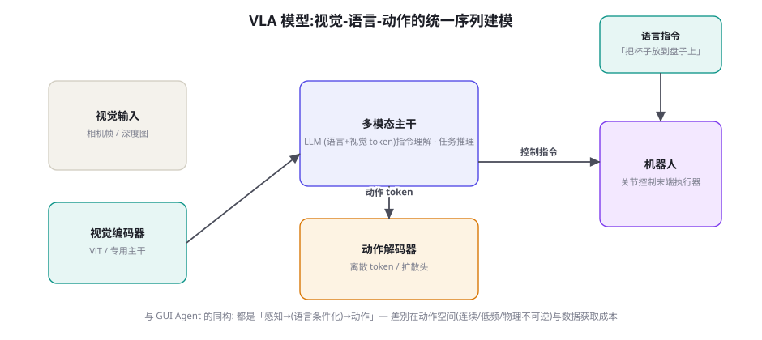
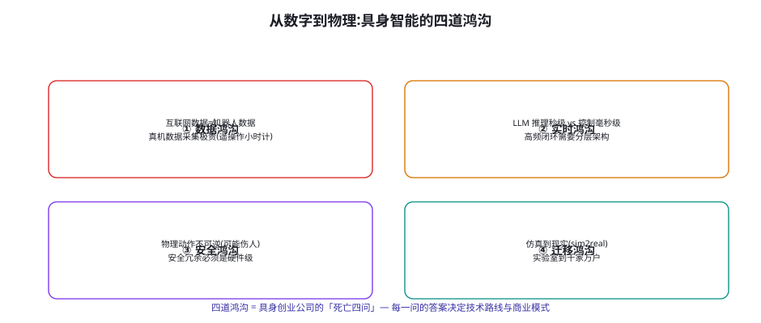

具身智能导览：RT-2、PaLM-E 与 VLA 模型
从屏幕走向物理世界——具身智能（Embodied AI）是 Agent 的终极形态，也是数据与安全挑战最陡峭的领域。本章作为「导览章」：VLA（Vision-Language-Action）模型的架构与代表作（RT-2、PaLM-E、OpenVLA）、从数字到物理的四道鸿沟、以及与前面所有章节的架构同构——你会惊讶于具身域的很多「新问题」其实是老朋友的变装。
VLA 模型：动作也进序列

VLA 的三个代表作与各自的范式贡献：RT-2（Brohan et al. 2023, Google DeepMind）——把机器人动作离散化为文本 token（末端位姿的坐标与旋转编码成特殊词表）——「动作即语言」让互联网级预训练的知识直接迁移到控制（「把恐龙玩具拿到小袋子上」——模型知道恐龙是什么）——范式贡献：语义知识注入控制的可行 proof；PaLM-E（Driess et al. 2023）——多模态大模型直接输出「具身推理计划」（连续观测进上下文、规划与重规划一体）——范式贡献：把「规划-执行分离」压缩为「端到端决策」的可行 proof；OpenVLA（Kim et al. 2024, arXiv:2406.09246）——开源 7B VLA（Open X-Embodiment 数据集训练）——范式贡献：证明 VLA 的开源复现路径（相对轻量的算力 + 公开数据可达接近闭源性能——具身域的 LLaMA 时刻）。三条路线的共同架构骨架（图 69-1）：「视觉 + 语言进主干、动作出主干」——与 GUI Agent（第 67 章）的「感知-决策-执行」在架构上完全同构——差别在动作空间（连续 vs 离散）、频率（控制回路毫秒级 vs 任务秒级）、与不可逆性（物理动作没有 undo）。
| 维度 | GUI Agent（67 章） | 移动/OS Agent（68 章） | 具身/VLA（本章） |
|---|---|---|---|
| 感知 | 截图 + DOM | aXTree + 截图 | 相机 + 深度 + 本体感知 |
| 动作空间 | 离散（点击/输入） | 离散（tap/swipe） | 连续（关节/末端位姿） |
| 频率 | 秒级/步 | 秒级/步 | 毫秒级闭环（分层解耦） |
| 不可逆性 | 低（可撤销为主） | 中 | 极高（物理安全） |
| 数据成本 | 低（爬取/合成） | 中（探索采集） | 极高（遥操作小时计） |
| 失败后果 | 任务失败 | 任务失败 + 账号风险 | 财产损失 + 人身风险 |
四道鸿沟：具身域的死亡四问

四道鸿沟的应对思路概览（每道都可以是独立的专著，这里给工程决策级的导览）：① 数据鸿沟——真机遥操作数据的成本（每小时数百到数千元）让「堆数据」不可行——三条出路：仿真合成（物理引擎里随机化生成——Isaac Lab/MuJoCo 生态，配 sim2real 迁移税）、视频学习（人类操作视频作为「弱监督预训练」——RT-2 系的网络视频迁移实验）、数据共享联盟（Open X-Embodiment——21 家机构 100 万+ 轨迹的共享——具身域的数据飞轮只能「联盟制」）；② 实时鸿沟——VLA 推理（秒级）进不了控制回路（毫秒级）——主流解法是分层架构：慢速 VLA 做任务级决策（1~10Hz）、快速策略（diffusion policy/模仿学习小模型）做高频执行（50~1000Hz）——「大脑-小脑」的架构分工（第 32 章模型路由的具身版：快慢双系统）；③ 安全鸿沟——物理不可逆让「验证后再执行」不够——安全冗余必须下沉到硬件层（力矩限制、工作空间围栏、急停回路——软件层的 L3 闸门（第 60 章）在物理域只是「外层」，内层是硬件级互锁）——「Agent 不能是安全的最终防线」是具身域的铁律；④ 迁移鸿沟——sim2real 的差距（仿真物理与真实世界的落差）与「实验室到现场」的差距（光照、杂乱、干扰）——对策：域随机化（仿真里随机一切可随机的）、真实场景的持续采集（部署即数据采集——第 47 章飞轮的具身版）。
把具身域的「新问题」与全书前文对号入座，会发现惊人的覆盖率：分层架构（快慢双系统）= 第 32 章模型路由；数据联盟= 第 47 章数据飞轮的联盟制变体；仿真环境= 第 45 章环境工程（reset/step/evaluate 五接口在物理仿真器上原样成立）；遥操作数据= 第 39 章人类示范轨迹；sim2real= 第 39 章分布对齐的物理版（训练分布要贴真实分布——「表面失真无害、结构失真有害」在仿真保真度上原样复用）；硬件安全冗余= 第 60 章闸门原则的终极形态；部署即采集= 第 47 章飞轮。覆盖率接近百分之百——具身智能没有发明新的工程问题，它把全书的问题推到了「最陡峭」的参数区间（数据最贵、延迟最严、不可逆最彻底）。这个同构对你的意义：前面所有章节的工程直觉在具身域全部有效——你缺的只是「物理层」的领域知识（机械、控制、感知硬件）——而这部分恰恰是与机械/控制团队协作就能补齐的（AI 工程师在具身团队的价值定位：把全书的方法论带到物理域）。
零硬件体验 VLA 的完整循环：用仿真环境（如 MuJoCo 或 LIBERO 基准的 Docker 版）跑一个开源 VLA 或模仿学习策略——「语言指令 → 视觉观测 → 动作序列 → 仿真执行」的端到端闭环在笔记本/免费 Colab 上就能跑通。然后把第 45 章的环境五接口（reset/step/evaluate/dump/snapshot）在仿真器上显式实现一遍——你会发现仿真器原生支持其中大部分接口——「训练环境五组件」在具身域不是抽象概念而是现成事实。实验的真正目标：亲手确认「具身 Agent 的工程骨架与数字 Agent 同构」，建立「方法可迁移」的信心——这是从数字域走向物理域的第一道心理门槛。
「快慢双系统」的分层接口给一个实现骨架——它是实时鸿沟（四道鸿沟之②）的标准解法：
class EmbodiedDualSystem:
"""大脑(慢): VLA 任务级决策 @ 1-10Hz
小脑(快): 专项策略高频执行 @ 50-1000Hz"""
def __init__(self):
self.brain = vla_model() # 大脑: 语言条件化的任务规划
self.cerebellum = {} # 小脑: 技能名 → 高频策略
self.current_skill = None
def brain_tick(self, observation, instruction):
"""大脑节拍 (低频): 分解任务、选择技能、监控进度。"""
plan = self.brain.plan(observation, instruction)
self.current_skill = self.cerebellum.get(plan.skill_name)
if self.current_skill is None:
# 技能缺失 → 现场蒸馏 (慢速 VLA 出动作示范
# → 在线模仿学习蒸馏成高频技能 → 入库)
self.current_skill = self.distill_skill(plan)
return plan.goal_state # 交给小脑的目标
def cerebellum_loop(self, obs, goal_state):
"""小脑回路 (高频): 目标状态 → 平滑控制序列。"""
while not reached(obs, goal_state):
action = self.current_skill.policy(obs, goal_state)
safety = hardware_guard.check(action) # 硬件级安全互锁
if safety.blocked:
self.brain.emergency_replan(obs) # 大脑介入
break
execute(action)
obs = sense()
# 完成上报大脑 → 下一段技能/任务骨架的三个架构要点：① 「目标状态」是层间契约——大脑不直接出控制指令（它慢），只出「要达到的状态」；小脑不管任务语义（它快），只管「到达目标状态」——层间用「状态」解耦而非「动作」——这是分层控制的经典智慧在 Agent 架构的复现；② 「现场蒸馏」补技能缺口——技能库里没有的动作用慢速 VLA 现场示范、在线蒸馏成高频策略——「大脑现场教，小脑现场学」（Voyager 技能库思想，第 70 章，的物理版）；③ 安全互锁在小脑层且硬件级——每条动作过 hardware_guard（力矩/围栏/急停——四道鸿沟之③的落地位置），触发时「大脑紧急重规划」——分层架构同时是安全架构：快层守物理安全、慢层守任务安全。这个骨架与第 32 章模型路由的「快慢分工」在思想上完全同源——具身域只是把「延迟敏感度」推到了极致。
「工业具身已可用」场景的技术拆解值得单独立节，因为它是「现在就能做」的具身项目样本。以「固定工作站分拣」为例的完整技术栈：① 感知配置——固定机位的 RGB-D 相机（深度补全视觉的第三维度——「抓哪里」的几何前提）+ 工位标定（相机-机械臂的手眼标定——像素坐标到机器人坐标的映射，一次性标定长期复用）；② 任务族定义——「有限任务族」的封闭性是该场景可用的根因（分拣 3 类物料 × 摆放 2 类托盘——任务空间的组合封闭让「数据覆盖」成为有限问题——第 50 章饱和问题在这里是朋友不是敌人：任务少，很快全覆盖）；③ 策略配置——快慢双系统（大脑管「这批料接下来分什么」的批次逻辑，小脑管「抓取这个物体」的执行策略——抓取策略用成熟的抓取检测模型（GraspNet 类）而非端到端 VLA——「成熟组件优先」原则）；④ 安全配置——围栏（物理光栅+软件工作空间）、力矩限制（接触力超限即停）、人机协作区 speed-and-separation monitoring（人在附近自动降速）——三道硬件防线先于任何软件智能；⑤ 数据闭环——工位的每一次抓取都记录（成功/失败/失败原因——视觉遮挡？抓取滑落？——物理归因标签）——分拣场景的数据飞轮在投产第一周就能转起来。这个样本的元启示：工业具身的「可用」不是模型变强了，而是「场景设计让问题变简单了」——环境工程（第 45 章）在物理域的第一课：改造环境比强化模型便宜。
具身智能的成熟度路线图
给读者一张冷静的时间线（2025 年视角的判断，随进展滚动修正）：已可用（现在）——结构化工业场景的「固定工作站 + 有限任务族」（分拣、码垛、质检——环境受控、任务封闭、数据可专项采集——「工业具身」的 ROI 已经转正）；3 年内可期——半结构化商业场景（餐饮后厨、仓储物流的柔性环节——环境半可控、任务族中等宽）——前提是数据战略（场景联盟）与安全框架（硬件互锁标准化）的成熟；5 年+ 的愿景——开放家庭场景（千家万户的杂乱环境）——这道门槛卡在「长尾环境的数据覆盖」与「人身安全的极致要求」双料最陡——「家庭机器人」的叙事要按这个节奏校准。给从业者的战略建议：具身域的创业与投资节奏由「数据可获取性」主导（而非模型能力）——选择「数据可闭环的场景」（工业、商业联盟）先做深，比追「通用机器人」的远期叙事更符合本书一贯的工程理性——先在窄场景跑通「数据飞轮 + 安全框架」，再谈泛化——这与第 47 章飞轮、第 60 章安全的全书逻辑完全一致。
「数字孪生评测层」（切入路径③的项目模板）的需求规格给出，供有志跨域的团队立项参考：交付物一：仿真 Harness——第 56 章五层架构的仿真版（任务库：具身基准任务 + 场景方专项任务；环境层：物理仿真器封装（reset/step/evaluate 五接口）；执行层：策略接入（VLA/模仿学习/规则策略统一接口）；判分层：任务成功率 + 过程指标（轨迹平滑度、能耗、安全违规数——物理域新增的过程维度）；报告层：分层报告 + 场景方读得懂的一页摘要）；交付物二：域随机化矩阵——光照/纹理/物体位姿/物理参数的随机化范围声明（sim2real 的「迁移税」估计器——随机化越宽真机迁移越稳但训练越难——矩阵是这条曲线的显式管理）；交付物三：real2sim 校准管线——真机轨迹回灌仿真（物理参数辨识——让仿真「越来越像」真机——第 61 章环境版本管理的物理版）。三交付物的共同技术特征：全程纯软件、物理知识按需（都在仿真器的文档里）——这正是「软件团队切入具身」的工程成本几乎为零的原因。项目周期参考：三人月到第一个可演示版本——相对「自建真机实验室」（一年起步）的门槛，这是具身域给软件团队的「低门票入口」。
「本体感知（Proprioception）」这个具身域特有概念值得向软件读者单独解释，因为它是「感知层红利低」（FAQ1）的主要原因：本体感知是机器人对「自己身体状态」的感知——关节角度、力矩、惯性、平衡——它没有「互联网数据」可继承（没有人把「端起一杯水的力道」发布在网上），只能靠传感器与专项采集——这层感知与「控制」深度耦合（感知就是为了控制服务的），因此与控制层一起留在「低红利区」。对软件背景读者的认知校准有三个点：① 多模态不是万金油——VLM 处理的是「外感知」（视觉/语言），本体感知是另一套信号空间与模型族（状态估计、动力学模型）——「把本体数据喂给 VLM」的 naive 思路在文献里已多次碰壁；② 本体感知的「表征工程」是具身域的独门手艺——关节状态怎么 token 化（连续量离散化还是独立编码器——RT-2 与 π0 给了不同答案——这是具身域自己卷出来的架构问题）；③ 软件团队的正确姿态——本体感知与控制是合作方的领地（机械/控制工程师），你的贡献点在「外感知的语义化」（VLM）与「任务层编排」——跨界协作的分工表在立项第一天就该写清楚（与第 58 章「信任边界画出来」同一精神：分工也要画出来）。
一个给「关注具身投资与职业」的读者的补充判断框架：如何读「具身智能的进展新闻」而不被发布会的节奏带偏——三个「降噪过滤器」：① 看评测不看演示——演示是 cherry-picked 的（最好的那一次），评测是分布的（第 50 章「成功率 60% 的信息量」一节在具身域加倍适用）——问「这个能力在 XX 基准上的成功率与方差」而不是「它演示了什么」；② 看任务族宽度——「会 100 个动作」与「会 5 个动作族」的差别是本质的（前者可能是 100 个专项策略的堆叠，后者才是泛化的证据——RT-2 系的语义泛化是「动作族内」的，跨族的泛化仍是开放问题）；③ 看数据来源声明——「端到端学会」的能力要问「训练数据里有没有这个场景」——「数据覆盖的泛化」与「真泛化」在当前技术下要严格区分（第 62 章「背题红利」的具身版）。三过滤器合用的判断句：「在什么评测上、什么任务族、什么数据条件下，成功率多少、方差多少」——能完整回答这四问的进展才是工程事实，答不完整的是营销素材。
收尾前补一个「具身安全」与第 59-60 章的精确接口，因为物理域把「权限分级」推到了人身尺度：第 60 章的 L0-L3 在具身域的翻译是 L0（纯感知：观察/建模——无任何运动输出）、L1（低动能：慢速空载运动、无接触作业）、L2（受接触：与人协作区的有限接触力作业）、L3（高动能或人邻近：快速运动、重载、人群环境）——翻译的要点是「动能 × 人邻近度」的双参数分级（ISO/TS 15066 协作机器人规范的力/压极限是定标的物理依据）。审批链的具身化差异：L2 以上的「人类确认」变成了「任务前的安全评估 + 现场安全员的持续监督」（物理域没有「点确认按钮」的从容——动作一旦发出只有「急停」一种人工干预，且响应窗口是毫秒级——所以物理域的「人工监督」必须是「前置审批 + 现场值守」而非「逐动作确认」）——第 60 章「确认疲劳」问题在物理域被「结构性排除」（无人会在毫秒窗口里点确认——这反过来证明了「分级前置审批」设计的必要性）。安全篇的读者可以把这一段当作「第 60 章的物理补丁」——框架不变，参数全部按「人身尺度」重定。
三个高频疑问
Q：LLM/VLM 的进展对具身智能有多大「免费红利」？分三层看红利率：语义层（高红利）——指令理解、任务分解、场景语义（「知道什么是杯子、什么是清理」）——VLA 主干直接继承语言/视觉模型的成果（RT-2 的核心发现）——这层的红利是「自动到账」的；感知层（中红利）——通用视觉表征（分割、检测、深度估计）随 VLM/基础视觉模型进步——但具身特有的感知（力反馈、本体状态、实时空间）仍需专用传感器与模型；控制层（低红利）——毫秒级控制策略、动力学适应——互联网数据的语言范式帮不上忙——这层是具身域的「自留地」（也是具身公司真正的技术壁垒所在）。红利分布的含义：「大脑」在快速变便宜（语义与推理），「小脑」仍是稀缺能力（控制与安全）——具身团队的价值构成要按这个分布设计（买大脑、自研小脑）。
Q：人形机器人是具身智能的必经形态吗？不是必经，是「环境兼容性」驱动的一种选择——判断的框架是「环境为人设计 vs 为机器改造」的两栏：环境可改造（工业产线、仓库）——专用形态（机械臂、AMR、定制底盘）效率更高、成本更低——「最适形态」原则；环境不可改造（家庭、公共服务空间——全部为人设计：楼梯、门把手、插座高度）——人形是「零环境改造成本」的兼容解——通用性的溢价。两栏的交汇点在「数据」：专用形态的数据可以按场景专项采集（工业的 ROI 已跑通），人形的数据需求横跨全人类环境（数据鸿沟最陡）——这解释了为什么「工业/商业专用先落地、人形后跟上」是数据逻辑的必然——人形的价值在「环境通用性」，它的成本在「数据通用性」——当数据联盟与仿真技术把数据成本压下来时，人形的经济性才会反转。给观察者的判断指标：看 Open X-Embodiment 类联盟的数据增长曲线与仿真到真机的迁移成功率——这两条线决定人形时刻的到来时间，比任何发布会都有信息量。
Q：软件 Agent 团队（本书前七部分的读者）如何切入具身域？三条按门槛递增的路径：① 大脑层贡献——你已有的能力直接可用：任务规划、工具调用、多模态理解、记忆系统（第 24-26 章）——具身系统同样需要「任务级 Agent」（VLA 之上的编排层——第 32 章路由 + 第 24 章编排的具身版）——这是软件团队对具身团队「最有交换价值」的贡献；② 仿真域实践——仿真器是「纯软件的环境」（第 45 章五接口）——在仿真里跑通全书方法论（评测、课程、RL、飞轮）不需要机械知识——本章实验就是入口；③ 联盟协作——具身团队缺的恰是软件团队的「数据与评测工程」（第 47/56 章），软件团队缺的恰是「物理层知识」——跨域协作的交换价值天然存在。一个务实的切入项目模板：「具身系统的数字孪生评测层」——为具身团队建仿真评测基建（第 56 章 Harness 的仿真版）——软件团队全程主导、物理知识按需学习——这是「以全书方法论为门票进入具身域」的最短路径。
本章在全书网络中的连接：上游是第 66 章（感知层）、第 45 章（环境工程——仿真五接口）、第 32 章（路由——快慢双系统）；横向与第 67/68 章（数字 GUI 域）构成「形态三部曲」，第 70 章（仿真与游戏——具身的「软件近亲」）直接衔接；下游通向第 92-98 章（理论篇——MDP/世界模型在具身域的物理回归）、第 76 章（成本——真机数据与硬件的账本）。复习锚点：VLA 架构图（69-1）与三代表作、形态对照表（69-1 表）、四道鸿沟图（69-2）、全书同构清单、成熟度路线图、切入三路径。
「部署即采集」（迁移鸿沟的对策）的具身版飞轮值得补一个闭环图式，它同时是本章与第 47 章的接口：部署 → 真实环境交互 → 分层记录（成功轨迹入演示池、失败轨迹带「物理归因标签」（打滑/遮挡/抓取失误）入课程池——第 45 章失败炼金术的物理版）→ 仿真回灌（真机轨迹进仿真器做「real2sim」校准——让仿真的物理参数贴近真实，反过来提升 sim2real 质量——双向流动）→ 策略更新（云端聚合训练 + 端侧下发——第 49 章持续学习的具身版）→ 部署。飞轮的启动燃料是「首批场景数据」（遥操作或人类演示——工业场景的「老师傅带徒弟」数据采集），飞轮的转速由「安全约束下的采集自由度」决定——安全框架与数据飞轮在具身域是一体两面：安全越系统化，可采集的数据越多（敢让它跑 = 有数据）——这解释了为什么「安全工程领先的公司」往往也是「数据飞轮领先的公司」——两件事不是成本竞争关系，而是先后手关系。
最后一段把具身智能放回「全书 Agent 图景」的最高层收束：从第 1 章的「会调工具的 LLM」走到本章的「会改变物理世界的机器」，Agent 的形态谱系完整了——文本对话 → 工具调用 → 浏览器 → 移动/OS → 游戏仿真 → 科学实验 → 物理具身——一条「动作空间越来越大、不可逆性越来越高、数据越来越贵、安全越来越硬」的单向谱系。谱系的价值不在「炫技排序」，在工程决策：你的业务问题落在谱系的哪一段，决定了该用哪一章的工程栈、承受哪一段的风险参数、投入哪一段的数据成本。「在谱系上定位，而不是在 hype 里漂流」——这是多模态篇（66-72 章）想交给读者的核心方法论。下一章（游戏与仿真）是谱系上「介于数字与物理之间」的奇妙地带——它在仿真里拥有物理的全部复杂性，却没有物理的全部代价——因而是「低成本练习物理级工程」的天然训练场。
本章小结
- VLA 三代表作的范式贡献：RT-2（动作即语言、语义注入控制）、PaLM-E（端到端决策）、OpenVLA（开源复现路径）。
- 架构同构：具身与 GUI Agent 共享「感知-决策-执行」骨架——差别在动作空间、频率、不可逆性三个参数。
- 四道鸿沟的对策概览：数据（仿真+视频+联盟）、实时（快慢双系统分层）、安全（硬件级互锁、Agent 非最终防线）、迁移（域随机化+部署即采集）。
- 红利分层：语义层高（自动到账）、感知层中、控制层低——「买大脑、自研小脑」的团队价值构成。
- 形态判断：环境可改造用专用形态，不可改造才用通用形态——数据逻辑决定「工业先落地、人形后跟上」。
- 软件团队的切入：大脑层贡献、仿真域实践、「数字孪生评测层」项目模板。
自测题
- 跑本页仿真实验：环境五接口在你的仿真器上各自的现成度如何？缺的接口怎么补？
- 把「快慢双系统」映射到一个你熟悉的具身场景：大脑管什么（频率/决策粒度）、小脑管什么？接口是什么？
- 「Agent 不能是安全的最终防线」——为桌面协作机器人写出三道硬件级防线的设计要点。
- 用「数据可闭环性」评估三个具身创业方向（家庭清洁/仓储分拣/餐厅传菜）：哪个的飞轮最先转起来？为什么？
参考文献与延伸阅读
- Brohan, A. et al. (2023). RT-2: Vision-Language-Action Models Transfer Web Knowledge to Robotic Control. arXiv:2307.15818
- Driess, D. et al. (2023). PaLM-E: An Embodied Multimodal Language Model. arXiv:2303.03378
- Kim, M. J. et al. (2024). OpenVLA: An Open-Source Vision-Language-Action Model. arXiv:2406.09246
- Open X-Embodiment Collaboration (2023). Open X-Embodiment: Robotic Learning Datasets and RT-X Models. arXiv:2310.08864
- Black, K. et al. (2024). π0: A Vision-Language-Action Flow Model for General Robot Control. arXiv:2410.24164（扩散动作头的代表）
- 工程参照：openvla/openvla · MuJoCo · LIBERO 基准